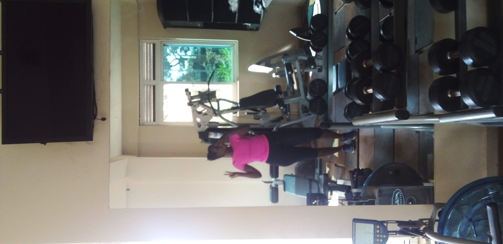
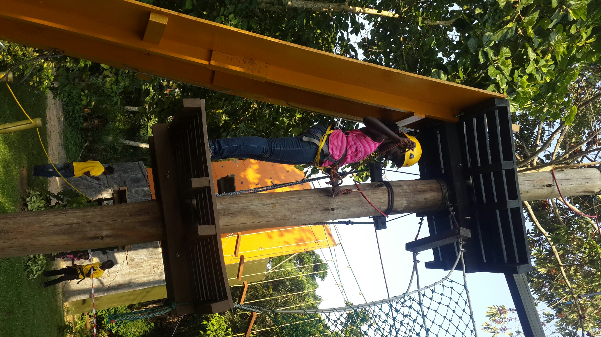
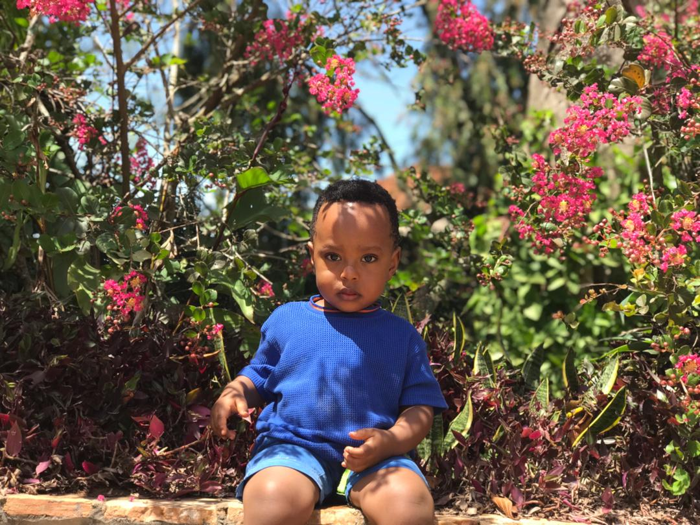
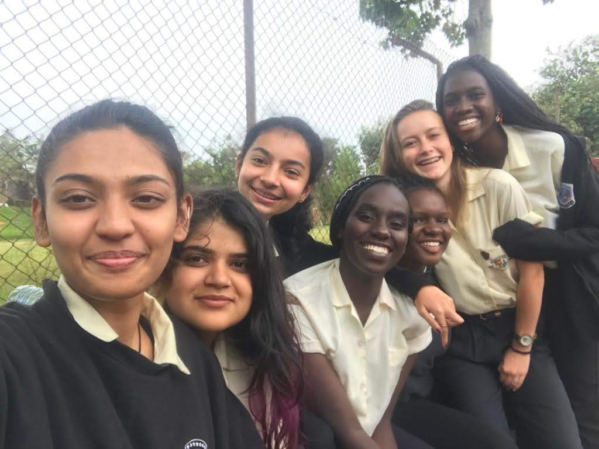

-Going to the Gym

I enjoy going to the gym as it relives stress from studying and keeps me fit.
-Going on adventures

-Taking Pictures

I take pictures as a creative outlet and my brother is usually my muse.
-Hanging out with friends
